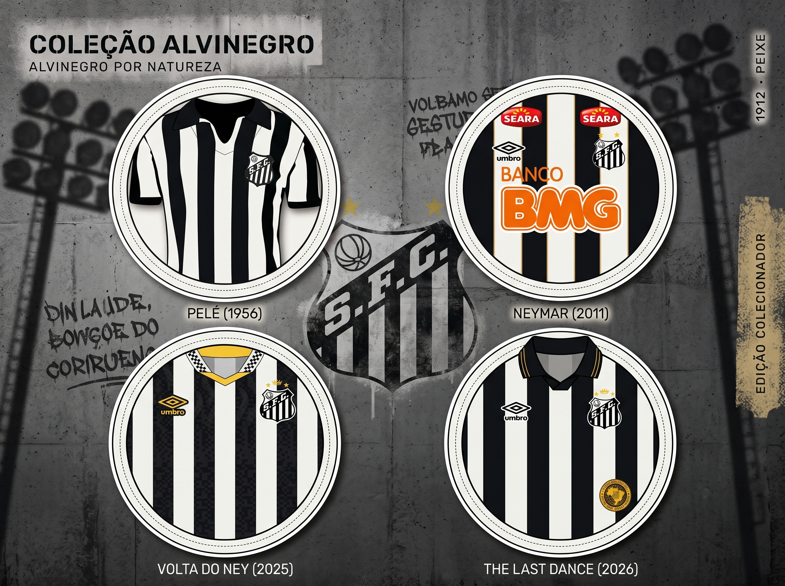
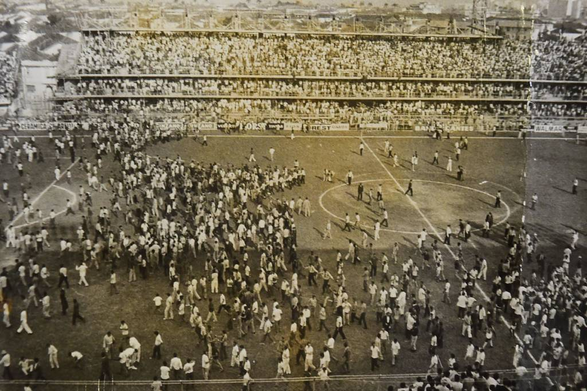
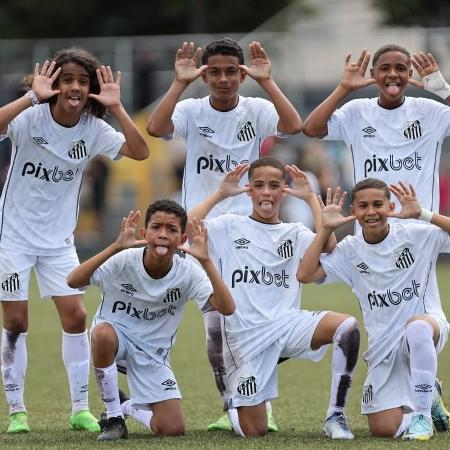
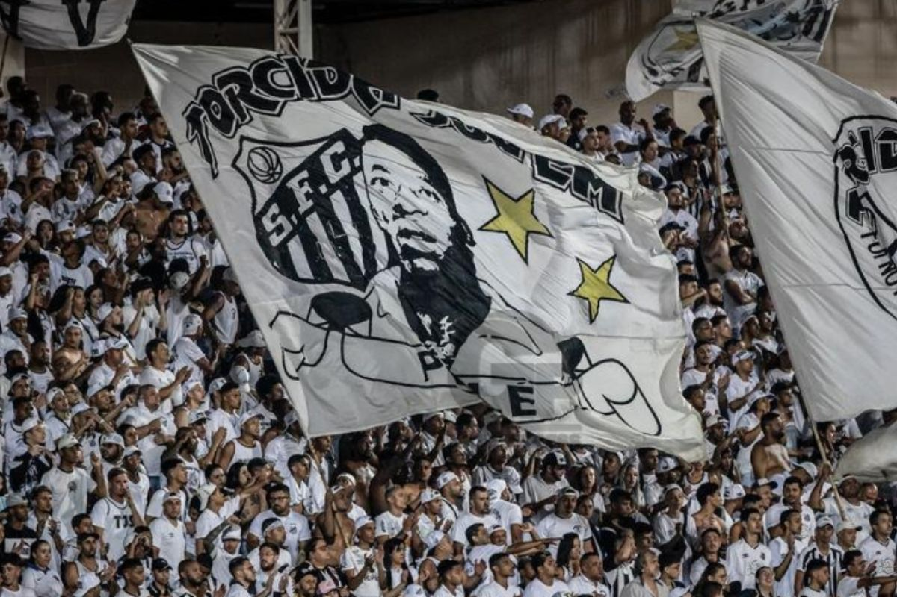
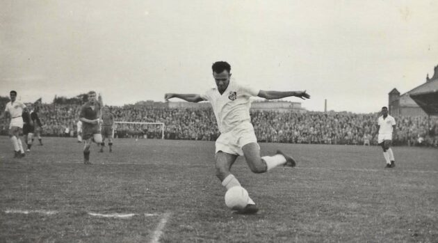
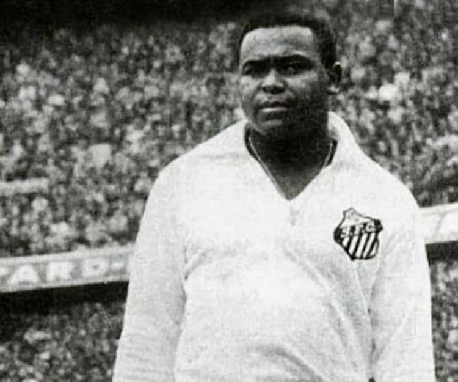
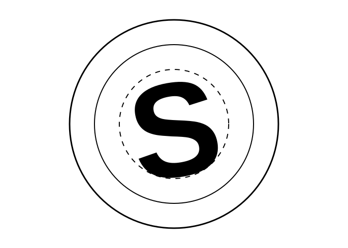

Campeão da Libertadores
O Santos levantou a taça em 1962, 1963 e 2011. Três campanhas que conectam diferentes gerações de santistas.
Santos · desde 1912
Uma paixão que atravessa gerações, nasce na Vila e encontra lugar em todo canto do mundo.
Feito de futebol. Movido por gente.

Muito além dos 90 minutos
Um clube se conta pelos lugares, pelas pessoas e pelas histórias que continuam vivas.

Em Santos, o estádio é endereço. Para quem está longe, é sempre um lugar para voltar.
Conheça o clube ↗
Na base, cada treino abre espaço para um novo capítulo da história alvinegra.
Descubra mais ↗
Uma camisa, muitas histórias. A arquibancada alvinegra não tem fronteiras.
Viva essa paixão ↗Foto: Ricardo Alfieri e Norberto Speranza / El Gráfico, 15 jul. 1964 — Wikimedia Commons.
Uma história que atravessa gerações
Desde 1912, o Santos constrói uma trajetória marcada por grandes equipes, jogadores inesquecíveis e uma torcida espalhada pelo mundo.

O clube é fundado em 14 de abril, na cidade de Santos, litoral de São Paulo.

A Vila Belmiro é inaugurada e passa a ser o endereço de tantas páginas importantes da história santista.

Com Pelé e um elenco histórico, o Santos conquista a Libertadores e a Copa Intercontinental em anos consecutivos.
/s.glbimg.com/es/ge/f/original/2017/03/08/5864097571_c5bf80a7fe_o.jpg)
O Peixe conquista sua terceira Libertadores, em uma campanha que marcou uma geração de torcedores.
Linha do tempo resumida. Datas e títulos apresentados como referência histórica.
Grandes noites, memória eterna
Do continente ao mundo, algumas campanhas viraram parte da identidade do Santos e do futebol brasileiro.
O Santos levantou a taça em 1962, 1963 e 2011. Três campanhas que conectam diferentes gerações de santistas.
Em 1962 e 1963, o clube venceu a Copa Intercontinental e levou o nome do Santos ao topo do futebol mundial.
Mais do que taças, o legado aparece no talento revelado, no futebol ofensivo e na paixão que acompanha o Peixe.
Camisas que viraram eternas
Cada época tem seus protagonistas. Estes nomes ajudam a contar a grandeza construída dentro e fora de campo.

O Rei do Futebol transformou sua passagem pelo Santos em um dos capítulos mais conhecidos da história do esporte.

Ponta histórico do clube, fez parte de equipes que encantaram o Brasil e o mundo nas décadas de 1950 e 1960.

Centroavante de grande talento, formou com Pelé uma das duplas mais marcantes do futebol santista.

Revelado pelo Santos, liderou uma geração vencedora e ajudou o clube a conquistar a Libertadores de 2011.
Uma seleção breve de nomes históricos — a lista de ídolos do Santos é muito maior.
A emoção tem hora
Agenda e placares podem mudar. Consulte os canais oficiais para informações atualizadas.
Estádio Barradão, Salvador (BA). Confira informações de ingressos e transmissão nos canais oficiais do clube.
Consultar agenda / Ingressos ↗Com show de Pelé (3 gols) no Estádio da Luz, em Lisboa, o Peixe conquistou seu primeiro título Mundial Interclubes.
* Este portal exibe dados informativos; os links levam ao site oficial do clube.

A arquibancada é sua
Seja de Santos, de São Paulo ou de qualquer lugar do planeta: tem sempre um jeito de estar perto do Peixe.
Encontre seu jeito de torcer ↗Informações sobre associação e produtos nos canais oficiais.